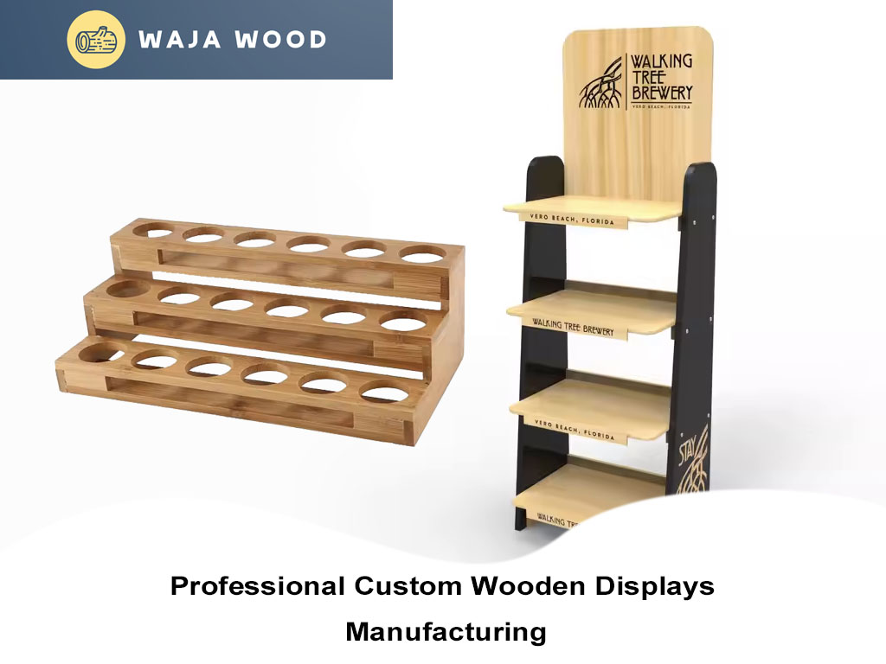

Custom Wooden Products China Manufacturer
Wajawood is a leading wooden products manufacturer in China. We use advanced manufacturing equipment to produce high-quality wooden crafts. Additionally, we support the design and customization of wooden products. We can manufacture a variety of wooden products in different shapes, sizes, and colors, allowing you to wholesale wooden products directly from us.
